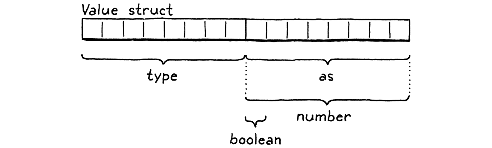

Types of Values
This book is a work in progress!
×If you see a mistake, find something unclear, or have a suggestion, please let me know. To follow its progress, please join the mailing list:
(I post about once a month. Don’t worry, I won’t spam you.)
When you are a Bear of Very Little Brain, and you Think of Things, you find sometimes that a Thing which seemed very Thingish inside you is quite different when it gets out into the open and has other people looking at it.
A. A. Milne, Winnie-the-Pooh
The past few chapters were huge, packed full of complex techniques and pages of code. In this chapter, there’s only one new concept to learn and a scattering of straightforward code. You’ve earned a respite.
Lox is dynamically typed. A single variable can
hold a Boolean, number, or string at different points in time. At least, that’s
the idea. Right now, in clox, all values are numbers. By the end of the chapter,
it will also support Booleans and nil. While those aren’t super interesting,
they force us to figure out how our value representation can dynamically handle
different types.
18 . 1Tagged Unions
The nice thing about working in C is that we can build our data structures from the raw bits up. The bad thing is that we have to do that. C doesn’t give you much for free at compile time and even less at runtime. As far as C is concerned, the universe is an undifferentiated array of bytes. It’s up to us to decide how many of those bytes to use and what they mean.
In order to choose a value representation, we need to answer two key questions:
-
How do we represent the type of a value? If you try to, say, multiply a number by
true, we need to detect that error at runtime and report it. In order to do that, we need to be able to tell what a value’s type is. -
How do we store the value itself? We need to not only be able to tell that three is a number, but that it’s different from the number four. I know, seems obvious, right? But we’re operating at a level where it’s good to spell these things out.
Since we’re not just designing this language but building it ourselves, when answering these two questions we also have to keep in mind the implementer’s eternal quest: to do it efficiently.
Language hackers over the years have come up with a variety of clever ways to pack the above information into as few bits as possible. For now, we’ll start with the simplest, classic solution: a tagged union. A value contains two parts: a type “tag”, and a payload for the actual value. To store the value’s type, we define an enum for each kind of value the VM supports.
#include "common.h"
typedef enum { VAL_BOOL, VAL_NIL, VAL_NUMBER, } ValueType;
typedef double Value;
For now, we have only a couple of cases, but this will grow as we add strings,
functions, and classes to clox. In addition to the type, we also need to store
the data for the value—the double for a number, true or false for a
Boolean. We could define a struct with fields for each possible type.
But this is a waste of memory. A value can’t simultaneously be both a number and a Boolean. So at any point in time, only one of those fields will be used. C lets you optimize this by defining a union. A union looks like a struct except that all of its fields overlap in memory.
The size of a union is the size of its largest field. Since the fields all reuse the same bits, you have to be very careful when working with them. If you store data using one field and then access it using another, you will reinterpret what the underlying bits mean.
As the name “tagged union” implies, our new value representation combines these two parts into a single struct.
} ValueType;
add after enum ValueType
replace 1 line
typedef struct { ValueType type; union { bool boolean; double number; } as; } Value;
typedef struct {
There’s a field for the type tag, and then a second field containing the union of all of the underlying values. On a 64-bit machine with a typical C compiler, the layout looks like this:
The four-byte type tag comes first, then the union. Most architectures prefer values be aligned to their size. Since the union field contains an eight-byte double, the compiler adds four bytes of padding after the type field to keep that double on the nearest eight-byte boundary. That means we’re effectively spending eight bytes on the type tag, which only needs to represent a number between zero and three. We could stuff the enum in a smaller size, but all that would do is increase the padding.
So our Values are 16 bytes, which seems a little large. We’ll improve it later. In the meantime, they’re still small enough to store on the C stack and pass around by value. Lox’s semantics allow that because the only types we support so far are immutable. If we pass a copy of a Value containing the number three to some function, we don’t need to worry about the caller seeing modifications to the value. You can’t “modify” three. It’s three forever.
18 . 2Lox Values and C Values
That’s our new value representation, but we aren’t done. Right now, the rest of
clox assumes Value is an alias for double. We have code that does a straight C
cast from one to the other. That code is all broken now. So sad.
With our new representation, a Value can contain a double, but it’s not equivalent to it. There is a mandatory conversion step to get from one to the other. We need to go through the code and insert those conversions to get clox working again.
We’ll implement these conversions as a handful of macros, one for each type and operation. First, to promote a native C value to a clox Value:
} Value;
add after struct Value
#define BOOL_VAL(value) ((Value){VAL_BOOL, {.boolean = value}}) #define NIL_VAL ((Value){VAL_NIL, {.number = 0}}) #define NUMBER_VAL(value) ((Value){VAL_NUMBER, {.number = value}})
typedef struct {
Each one of these takes a C value of the appropriate type and produces a Value that has the correct type tag and contains the underlying value. This hoists statically typed values up into clox’s dynamically typed universe. In order to do anything with a Value, though, we need to unpack it and get the C value back out.
} Value;
add after struct Value
#define AS_BOOL(value) ((value).as.boolean) #define AS_NUMBER(value) ((value).as.number)
#define BOOL_VAL(value) ((Value){VAL_BOOL, {.boolean = value}})
These macros go in the opposite direction. Given a Value of the right type, they unwrap it and return the corresponding raw C value. The “right type” part is important! These macros directly access the union fields. If we were to do something like:
Value value = BOOL_VAL(true); double number = AS_NUMBER(value);
Then we may open a smoldering portal to the Shadow Realm. It’s not safe to use
any of the AS_ macros unless we know the Value contains the appropriate type.
To that end, we define a last few macros to check a Value’s type.
} Value;
add after struct Value
#define IS_BOOL(value) ((value).type == VAL_BOOL) #define IS_NIL(value) ((value).type == VAL_NIL) #define IS_NUMBER(value) ((value).type == VAL_NUMBER)
#define AS_BOOL(value) ((value).as.boolean)
These macros return true if the Value has that
type. Any time we call one of the AS_ macros, we need to guard it behind a
call to one of these first. With these eight macros, we can now safely shuttle
data between Lox’s dynamic world and C’s static one.
18 . 3Dynamically Typed Numbers
We’ve got our value representation and the tools to convert to and from it. All that’s left to get clox running again is to grind through the code and fix every place where data moves across that boundary. This is one of those sections of the book that isn’t exactly mind-blowing, but I promised I’d show you every single line of code, so here we are.
The first values we create are the constants generated when we compile number literals. After we convert the lexeme to a C double, we simply wrap it in a Value before storing it in the constant table.
double value = strtod(parser.previous.start, NULL);
in number()
replace 1 line
emitConstant(NUMBER_VAL(value));
}
Over in the runtime, we have a function to print values.
void printValue(Value value) {
in printValue()
replace 1 line
printf("%g", AS_NUMBER(value));
}
Right before we send the Value to printf(), we unwrap it and extract the
double value. We’ll revisit this function shortly to add the other types, but
let’s get our existing code working first.
18 . 3 . 1Unary negation and runtime errors
The next simplest operation is unary negation. It pops a value off the stack, negates it, and pushes the result. Now that we have other types of values, we can’t assume the operand is a number anymore. The user could just as well do:
print -false; // Uh...
We need to handle that gracefully, which means it’s time for runtime errors. Before performing an operation that requires a certain type, we need to make sure the Value is that type.
For unary negation, the check looks like this:
case OP_DIVIDE: BINARY_OP(/); break;
in run()
replace 1 line
case OP_NEGATE:
if (!IS_NUMBER(peek(0))) {
runtimeError("Operand must be a number.");
return INTERPRET_RUNTIME_ERROR;
}
push(NUMBER_VAL(-AS_NUMBER(pop())));
break;
case OP_RETURN: {
First, we check to see if the Value on top of the stack is a number. If it’s not, we report the runtime error and stop the interpreter. Otherwise, we keep going. Only after this validation do we unwrap the operand, negate it, wrap the result and push it.
To access the Value, we use a new little function.
add after pop()
static Value peek(int distance) { return vm.stackTop[-1 - distance]; }
It returns a Value from the stack but doesn’t pop it.
The distance argument is how far down from the top of the stack to look: zero
is the top, one is one slot down, etc.
We report the runtime error using a new function that we’ll get a lot of mileage out of over the remainder of the book.
add after resetStack()
static void runtimeError(const char* format, ...) { va_list args; va_start(args, format); vfprintf(stderr, format, args); va_end(args); fputs("\n", stderr); size_t instruction = vm.ip - vm.chunk->code - 1; int line = vm.chunk->lines[instruction]; fprintf(stderr, "[line %d] in script\n", line); resetStack(); }
You’ve certainly called variadic functions—ones that take a varying number
of arguments—in C before: printf() is one. But you may not have defined
your own. This book isn’t a C tutorial, so I’ll
skim over it here, but basically the ... and va_list stuff let us pass an
arbitrary number of arguments to runtimeError(). It forwards those on to
vfprintf(), which is the flavor of printf() that takes an explicit
va_list.
Callers can pass a format string to runtimeError() followed by a number of
arguments, just like they can when calling printf() directly. runtimeError()
then formats and prints those arguments. We won’t take advantage of that in this
chapter, but later chapters will produce formatted runtime error messages that
contain other data.
After we show the hopefully helpful error message, we tell the user which line of their code was being executed when the error occurred. Since we left the tokens behind in the compiler, we look up the line in the debug information compiled into the chunk. If our compiler did its job right, that corresponds to the line of source code that the bytecode was compiled from.
We look into the chunk’s debug line array using the current bytecode instruction
index minus one. That’s because the interpreter advances past each instruction
before executing it. So, at the point that we call runtimeError(), the failed
instruction is the previous one.
In order to use va_list and the macros for working with it, we need to bring
in a standard header.
add to top of file
#include <stdarg.h>
#include <stdio.h>
With this, our VM can not only do the right thing when we negate numbers (like it used to before we broke it), but it also gracefully handles erroneous attempts to negate other types (which we don’t have yet, but still).
18 . 3 . 2Binary arithmetic operators
We have our runtime error machinery in place now, so fixing the binary operators
is easier even though they’re more complex. We support four binary operators
today: +, -, *, and /. The only difference between them is which
underlying C operator they use. To minimize redundant code between the four
operators, we wrapped up the commonality in a big preprocessor macro that takes
the operator token as a parameter.
That macro seemed like overkill a few chapters ago, but we get the benefit from it today. It lets us add the necessary type checking and conversions in one place.
#define READ_CONSTANT() (vm.chunk->constants.values[READ_BYTE()])
in run()
replace 6 lines
#define BINARY_OP(valueType, op) \ do { \ if (!IS_NUMBER(peek(0)) || !IS_NUMBER(peek(1))) { \ runtimeError("Operands must be numbers."); \ return INTERPRET_RUNTIME_ERROR; \ } \ double b = AS_NUMBER(pop()); \ double a = AS_NUMBER(pop()); \ push(valueType(a op b)); \ } while (false)
for (;;) {
Yeah, I realize that’s a monster of a macro. It’s not what I’d normally consider good C practice, but let’s roll with it. The changes are similar to what we did for unary negate. First, we check that the two operands are both numbers. If either isn’t, we report a runtime error and yank the ejection seat lever.
If the operands are fine, we pop them both and unwrap them. Then we apply the
given operator, wrap the result, and push it back on the stack. Note that we
don’t wrap the result by directly using NUMBER_VAL(). Instead, the wrapper to
use is passed in as a macro parameter. For our
existing arithmetic operators, the result is a number, so we pass in the
NUMBER_VAL macro.
}
in run()
replace 4 lines
case OP_ADD: BINARY_OP(NUMBER_VAL, +); break;
case OP_SUBTRACT: BINARY_OP(NUMBER_VAL, -); break;
case OP_MULTIPLY: BINARY_OP(NUMBER_VAL, *); break;
case OP_DIVIDE: BINARY_OP(NUMBER_VAL, /); break;
case OP_NEGATE:
Soon, I’ll show you why we made the wrapping macro an argument.
18 . 4Two New Types
All of our existing clox code is back in working order. Finally, it’s time to add some new types. We’ve got a running numeric calculator that now does a number of pointless paranoid runtime type checks. We can represent other types internally, but there’s no way for a user’s program to ever create a Value of one of those types.
Not until now, that is. We’ll start by adding compiler support for the three new
literals: true, false, and nil. They’re all pretty simple, so we’ll do all
three in a single batch.
With number literals, we had to deal with the fact that there are billions of
possible numeric values. We attended to that by storing the literal’s value in
the chunk’s constant table and emitting a bytecode instruction that simply
loaded that constant. We could do the same thing for the new types. We’d store,
say, true, in the constant table, and use an OP_CONSTANT to read it out.
But given that there are literally (heh) only three possible values we need to worry about with these new types, it’s gratuitous—and slow!—to waste a two-byte instruction and a constant table entry on them. Instead, we’ll define three dedicated instructions to push each of these literals on the stack.
OP_CONSTANT,
in enum OpCode
OP_NIL, OP_TRUE, OP_FALSE,
OP_ADD,
Our scanner already treats true, false, and nil as keywords, so we can
skip right to the parser. With our table-based Pratt parser, we just need to
slot parser functions into the rows associated with those keyword token types.
We’ll use the same function in all three slots. Here:
[TOKEN_ELSE] = {NULL, NULL, PREC_NONE},
replace 1 line
[TOKEN_FALSE] = {literal, NULL, PREC_NONE},
[TOKEN_FOR] = {NULL, NULL, PREC_NONE},
Here:
[TOKEN_THIS] = {NULL, NULL, PREC_NONE},
replace 1 line
[TOKEN_TRUE] = {literal, NULL, PREC_NONE},
[TOKEN_VAR] = {NULL, NULL, PREC_NONE},
And here:
[TOKEN_IF] = {NULL, NULL, PREC_NONE},
replace 1 line
[TOKEN_NIL] = {literal, NULL, PREC_NONE},
[TOKEN_OR] = {NULL, NULL, PREC_NONE},
When the parser encounters false, nil, or true, in prefix position, it
calls this new parser function:
add after binary()
static void literal() { switch (parser.previous.type) { case TOKEN_FALSE: emitByte(OP_FALSE); break; case TOKEN_NIL: emitByte(OP_NIL); break; case TOKEN_TRUE: emitByte(OP_TRUE); break; default: return; // Unreachable. } }
Since parsePrecedence() has already consumed the keyword token, all we need to
do is output the proper instruction. We figure that
out based on the type of token we parsed. Our front end can now compile Boolean
and nil literals to bytecode. Moving down the execution pipeline, we reach the
interpreter.
case OP_CONSTANT: {
Value constant = READ_CONSTANT();
push(constant);
break;
}
in run()
case OP_NIL: push(NIL_VAL); break;
case OP_TRUE: push(BOOL_VAL(true)); break;
case OP_FALSE: push(BOOL_VAL(false)); break;
case OP_ADD: BINARY_OP(NUMBER_VAL, +); break;
This is pretty self-explanatory. Each instruction summons the appropriate value and pushes it onto the stack. We shouldn’t forget our disassembler either.
case OP_CONSTANT:
return constantInstruction("OP_CONSTANT", chunk, offset);
in disassembleInstruction()
case OP_NIL:
return simpleInstruction("OP_NIL", offset);
case OP_TRUE:
return simpleInstruction("OP_TRUE", offset);
case OP_FALSE:
return simpleInstruction("OP_FALSE", offset);
case OP_ADD:
With this in place, we can run this Earth-shattering program:
true
Except that when the interpreter tries to print the result, it blows up. We need
to extend printValue() to handle the new types too:
void printValue(Value value) {
in printValue()
replace 1 line
switch (value.type) { case VAL_BOOL: printf(AS_BOOL(value) ? "true" : "false"); break; case VAL_NIL: printf("nil"); break; case VAL_NUMBER: printf("%g", AS_NUMBER(value)); break; }
}
There we go! Now we have some new types. They just aren’t very useful yet. Aside
from the literals, you can’t really do anything with them. It will be a while
before nil comes into play, but we can start putting Booleans to work in the
logical operators.
18 . 4 . 1Logical not and falsiness
The simplest logical operator is our old exclamatory friend unary not.
print !true; // "false"
This new operation gets a new instruction.
OP_DIVIDE,
in enum OpCode
OP_NOT,
OP_NEGATE,
We can reuse the unary() parser function we wrote for unary negation to
compile a not expression. We just need to slot it into the parsing table.
[TOKEN_STAR] = {NULL, binary, PREC_FACTOR},
replace 1 line
[TOKEN_BANG] = {unary, NULL, PREC_NONE},
[TOKEN_BANG_EQUAL] = {NULL, NULL, PREC_NONE},
Because I knew we were going to do this, the unary() function already has a
switch on the token type to figure out which bytecode instruction to output. We
merely add another case.
switch (operatorType) {
in unary()
case TOKEN_BANG: emitByte(OP_NOT); break;
case TOKEN_MINUS: emitByte(OP_NEGATE); break;
default:
return; // Unreachable.
}
That’s it for the front end. Let’s head over to the VM and conjure this instruction into life.
case OP_DIVIDE: BINARY_OP(NUMBER_VAL, /); break;
in run()
case OP_NOT:
push(BOOL_VAL(isFalsey(pop())));
break;
case OP_NEGATE:
Like our previous unary operator, it pops the one operand, performs the
operation, and pushes the result. And, as we did there, we have to worry about
dynamic typing. Taking the logical not of true is easy, but there’s nothing
preventing an unruly programmer from writing something like this:
print !nil;
For unary minus, we made it an error to negate anything that isn’t a number. But Lox, like most scripting languages, is more
permissive when it comes to ! and other contexts where a Boolean is expected.
The rule for how other types are handled is called “falsiness”, and we implement
it here:
add after peek()
static bool isFalsey(Value value) { return IS_NIL(value) || (IS_BOOL(value) && !AS_BOOL(value)); }
Lox follows Ruby in that nil and false are falsey and every other value
behaves like true. We’ve got a new instruction we can generate, so we also
need to be able to ungenerate it in the disassembler.
case OP_DIVIDE:
return simpleInstruction("OP_DIVIDE", offset);
in disassembleInstruction()
case OP_NOT:
return simpleInstruction("OP_NOT", offset);
case OP_NEGATE:
18 . 4 . 2Equality and comparison operators
That wasn’t too bad. Let’s keep the momentum going and knock out the equality
and comparison operators too: ==, !=, <, >, <=, and >=. That covers
all of the operators that return Boolean results except the logical operators
and and or. Since those need to short-circuit (basically do a little
control flow) we aren’t ready for them yet.
Here are the new instructions for those operators:
OP_FALSE,
in enum OpCode
OP_EQUAL, OP_GREATER, OP_LESS,
OP_ADD,
Wait, only three? What about !=, <=, and >=? We could create instructions
for those too. Honestly, the VM would execute faster if we did, so we should
do that if the goal is performance.
But my main goal is to teach you about bytecode compilers. I want you to start internalizing the idea that the bytecode instructions don’t need to closely follow the user’s source code. The VM has total freedom to use whatever instruction set and code sequences it wants as long as they have the right user-visible behavior.
The expression a != b has the same semantics as !(a == b), so the compiler
is free to compile the former as if it were the latter. Instead of a dedicated
OP_NOT_EQUAL instruction, it can output an OP_EQUAL followed by an OP_NOT.
Likewise, a <= b is the same as !(a > b) and a >= b is !(a < b). Thus, we only need three new instructions.
Over in the parser, though, we do have six new operators to slot into the parse
table. We use the same binary() parser function from before. Here’s the row
for !=:
[TOKEN_BANG] = {unary, NULL, PREC_NONE},
replace 1 line
[TOKEN_BANG_EQUAL] = {NULL, binary, PREC_EQUALITY},
[TOKEN_EQUAL] = {NULL, NULL, PREC_NONE},
The remaining five operators are a little farther down in the table.
[TOKEN_EQUAL] = {NULL, NULL, PREC_NONE},
replace 5 lines
[TOKEN_EQUAL_EQUAL] = {NULL, binary, PREC_EQUALITY}, [TOKEN_GREATER] = {NULL, binary, PREC_COMPARISON}, [TOKEN_GREATER_EQUAL] = {NULL, binary, PREC_COMPARISON}, [TOKEN_LESS] = {NULL, binary, PREC_COMPARISON}, [TOKEN_LESS_EQUAL] = {NULL, binary, PREC_COMPARISON},
[TOKEN_IDENTIFIER] = {NULL, NULL, PREC_NONE},
Inside binary() we already have a switch to generate the right bytecode for
each token type. We add cases for the six new operators.
switch (operatorType) {
in binary()
case TOKEN_BANG_EQUAL: emitBytes(OP_EQUAL, OP_NOT); break;
case TOKEN_EQUAL_EQUAL: emitByte(OP_EQUAL); break;
case TOKEN_GREATER: emitByte(OP_GREATER); break;
case TOKEN_GREATER_EQUAL: emitBytes(OP_LESS, OP_NOT); break;
case TOKEN_LESS: emitByte(OP_LESS); break;
case TOKEN_LESS_EQUAL: emitBytes(OP_GREATER, OP_NOT); break;
case TOKEN_PLUS: emitByte(OP_ADD); break;
The ==, <, and > operators output a single instruction. The others output
a pair of instructions, one to evalute the inverse operation, and then an
OP_NOT to flip the result. Six operators for the price of three instructions!
That means over in the VM, our job is simpler. Equality is the most general operation.
case OP_FALSE: push(BOOL_VAL(false)); break;
in run()
case OP_EQUAL: {
Value b = pop();
Value a = pop();
push(BOOL_VAL(valuesEqual(a, b)));
break;
}
case OP_ADD: BINARY_OP(NUMBER_VAL, +); break;
You can evaluate == on any pair of objects, even objects of different types.
There’s enough complexity that it makes sense to shunt that logic over to a
separate function. That function always returns a C bool, so we can safely
wrap the result in a BOOL_VAL. The function relates to Values, so it lives
over in the “value” module.
} ValueArray;
add after struct ValueArray
bool valuesEqual(Value a, Value b);
void initValueArray(ValueArray* array);
And here’s the implementation:
add after printValue()
bool valuesEqual(Value a, Value b) { if (a.type != b.type) return false; switch (a.type) { case VAL_BOOL: return AS_BOOL(a) == AS_BOOL(b); case VAL_NIL: return true; case VAL_NUMBER: return AS_NUMBER(a) == AS_NUMBER(b); default: return false; // Unreachable. } }
First, we check the types. If the Values have different types, they are definitely not equal. Otherwise, we unwrap the two Values and compare them directly.
For each value type, we have a separate case that handles comparing the value
itself. Given how similar the cases are, you might wonder why we can’t simply
memcmp() the two Value structs and be done with it. The problem is that
because of padding and different-sized union fields, a Value contains unused
bits. C gives no guarantee about what is in those, so it’s possible that two
equal Values actually differ in memory that isn’t used.
(You wouldn’t believe how much pain I went through before learning this fact.)
Anyway, as we add more types to clox, this function will grow new cases. For now, these three are sufficient. The other comparison operators are easier since they work only on numbers.
Value a = pop();
push(BOOL_VAL(valuesEqual(a, b)));
break;
}
in run()
case OP_GREATER: BINARY_OP(BOOL_VAL, >); break;
case OP_LESS: BINARY_OP(BOOL_VAL, <); break;
case OP_ADD: BINARY_OP(NUMBER_VAL, +); break;
We already extended the BINARY_OP macro to handle operators that return
non-numeric types. Now we get to use that. We pass in BOOL_VAL since the
result value type is Boolean. Otherwise, it’s no different from plus or minus.
As always, the coda to today’s aria is disassembling the new instructions.
case OP_FALSE:
return simpleInstruction("OP_FALSE", offset);
in disassembleInstruction()
case OP_EQUAL:
return simpleInstruction("OP_EQUAL", offset);
case OP_GREATER:
return simpleInstruction("OP_GREATER", offset);
case OP_LESS:
return simpleInstruction("OP_LESS", offset);
case OP_ADD:
With that, our numeric calculator has become something closer to a general expression evaluator. Fire up clox and type in:
!(5 - 4 > 3 * 2 == !nil)
OK, I’ll admit that’s maybe not the most useful expression, but we’re making progress. We have one missing built-in type with its own literal form: strings. Those are much more complex because strings can vary in size. That tiny difference turns out to have implications so large that we give strings their very own chapter.
Challenges
-
We could reduce our binary operators even further than we did here. Which other instructions can you eliminate, and how would the compiler cope with their absence?
-
Conversely, we can improve the speed of our bytecode VM by adding more specific instructions that correspond to higher-level operations. What instructions would you define to speed up the kind of user code we added support for in this chapter?